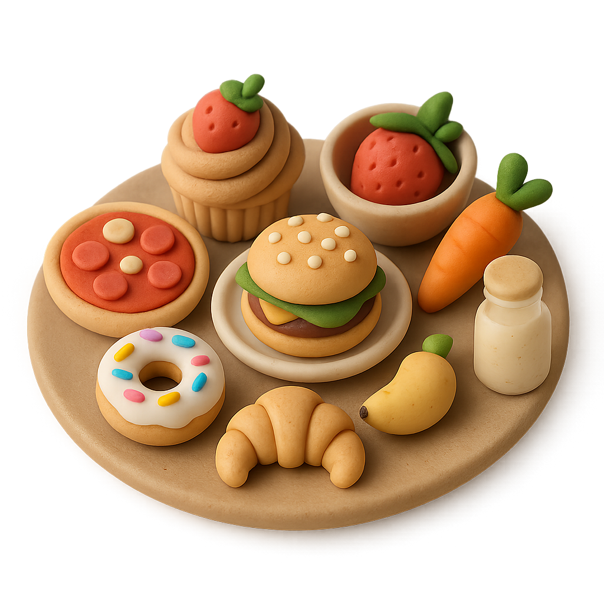

← Back
Scan a meal
Choose how you'd like to add this meal.

Take a photo of your meal or a product barcode.
Good lighting helps NutriScan tell ingredients apart.
Analyzing image...
!
Couldn't read that photo
The image was too blurry to identify ingredients with confidence.